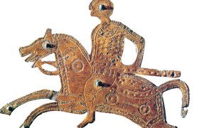

Lezione 5  Invasioni barbariche
Invasioni barbariche

«I Germani hanno occhi azzurri e sguardo minaccioso, chiome rossicce, corpi grandi. Usano lance munite di un piccolo e breve ferro; pochi hanno corazze, raramente portano elmi di metallo o di cuoio. Scelgono i re secondo la nobiltà, i comandanti secondo il valore; i re non hanno un potere illimitato, e i capi comandano solo se sono prodi. Non raffigurano i loro dèi in sembianze umane; preferiscono invece consacrare a loro boschi e pascoli. Queste popolazioni non abitano nessuna città e non abitano in case vicine le une alle altre; vivono separati e dispersi qua e là; non usano pietre da costruzione o tegole, ma si servono per ogni costruzione di legname rozzo e senza bellezza. I Germani si accontentano di una moglie per ciascuno; non è la moglie che offre la dote al marito, ma il marito alla moglie. Usano come bevanda un liquido distillato dall’orzo e dal frumento; i loro cibi sono semplici e consistono in frutti selvatici, carne di selvaggina fresca, latte. Tutti coltivano un pezzo di terra più o meno grande; d’altra parte vi è tanta disponibilità di campi liberi, che questa distribuzione riesce assai facile, ed è possibile ogni anno coltivare nuovi campi e abbandonare i vecchi».
(Publio Cornelio Tacito, La Germania, Zanichelli, Bologna, 1983)